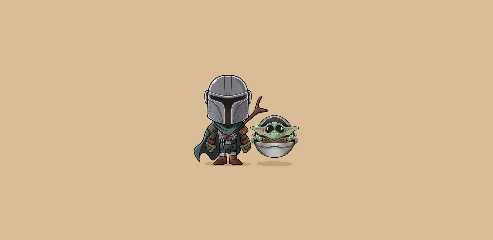

Water maze
Spatial learning and memory paradigms. Sensitive to strain, vision, and stress handling.

Full-service by default. Limited self-service access may be available for trained UNC investigators under defined conditions and staff oversight.
Placeholder policy language. Replace with your final access rules.
Assay-specific pages will be added over time. For now, request a consult in iLab and specify your domain(s).
Spatial learning and memory paradigms. Sensitive to strain, vision, and stress handling.
Locomotion, coordination, balance, and motor learning readouts.
Approach–avoidance and exploration-based measures. Strongly environment-dependent.
Task-dependent learning curves and retention metrics.
Social preference, novelty, interaction time, and exploration patterns.
Basic sensory processing and gating tasks (capability-dependent).
Activity rhythms and light-cycle sensitive paradigms.
Sleep-related metrics are instrumentation-dependent. Confirm capability during consult.
Placeholder rate structure. Replace dollar values once your iLab catalog is finalized. Rates may vary by assay complexity, staffing level, analysis deliverables, and pilot work.
Animal numbers, number of sessions, assay setup time, extra handling constraints, video scoring, blinded scoring, custom analysis pipelines, and special scheduling windows.